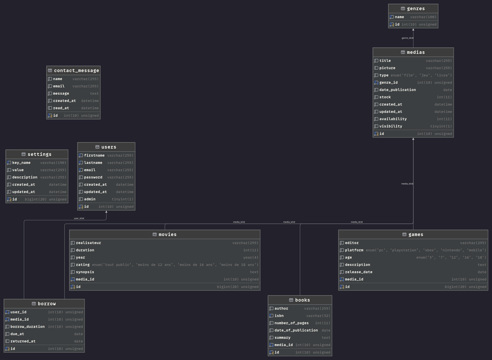

1. Introduction
1.1 À propos de ce guide
Ce guide a été conçu pour vous accompagner dans l'utilisation quotidienne du panel d'administration de votre médiathèque. Vous y trouverez toutes les informations nécessaires pour gérer efficacement votre catalogue de médias, vos utilisateurs et vos opérations.
1.2 Prérequis
Pour utiliser le panel d'administration, vous devez :
- Disposer d'un compte administrateur (créé par le développeur)
- Avoir accès à un navigateur web moderne (Chrome, Firefox, Safari, Edge)
- Être connecté à Internet
1.3 Vue d'ensemble des fonctionnalités
Statistiques
Visualisez les données clés de votre médiathèque
Utilisateurs
Gérez les comptes utilisateurs
Catalogue
Ajoutez et modifiez livres, films et jeux
Emprunts
Suivez les emprunts et retards
Messages
Consultez les demandes de contact
Genres
Enrichissez les catégories
1.4 Architecture de la base de données
Voici le schéma de la base de données de votre médiathèque. Ce diagramme vous permet de comprendre comment les différentes tables sont reliées entre elles :

Tables principales :
- users : Gère les comptes utilisateurs et administrateurs
- medias : Catalogue des livres, films et jeux
- books, movies, games : Informations spécifiques à chaque type de média
- borrows : Suivi des emprunts et retours
- contacts : Messages de contact
- genres : Catégories de médias
2. Connexion au Panel d'Administration
2.1 Accéder à la page de connexion
- Ouvrez votre navigateur web
- Accédez à l'URL :
votre-site.com/auth/login - Vous arrivez sur la page de connexion
2.2 Se connecter
- Email : Saisissez l'adresse email de votre compte administrateur
- Mot de passe : Saisissez votre mot de passe
- Cliquez sur le bouton "Se connecter"
2.3 Accéder au panel d'administration
Une fois connecté avec un compte administrateur, vous pouvez accéder au panel via :
- L'URL :
votre-site.com/admin/dashboard - Le menu de navigation (si disponible dans votre interface)
3. Tableau de Bord
3.1 Vue d'ensemble
Le tableau de bord est la page d'accueil de votre panel d'administration. Il affiche en un coup d'œil les statistiques clés de votre médiathèque.
URL d'accès : /admin/dashboard
3.2 Statistiques affichées
Le tableau de bord présente 5 indicateurs principaux :
| Indicateur | Description |
|---|---|
| Total Utilisateurs | Nombre total d'utilisateurs enregistrés |
| Total Médias | Nombre total de médias dans le catalogue |
| Total Livres | Nombre de livres disponibles |
| Total Films | Nombre de films disponibles |
| Total Jeux | Nombre de jeux vidéo disponibles |
3.3 Graphiques
Des graphiques à barres visualisent la répartition de vos médias par type, facilitant l'analyse de votre inventaire.
4. Gestion des Utilisateurs
4.1 Accéder à la liste des utilisateurs
URL d'accès : /admin/users
Cette page affiche tous les utilisateurs enregistrés sur votre plateforme.
4.2 Informations affichées
Pour chaque utilisateur, vous verrez :
- ID : Identifiant unique
- Nom complet : Prénom + Nom
- Email : Adresse email de contact
- Rôle : Badge "Admin" ou "Utilisateur"
- Date d'inscription : Date de création du compte
4.3 Rechercher un utilisateur
- Utilisez la barre de recherche en haut de la liste
- Tapez le nom ou l'email de l'utilisateur recherché
- Les résultats se filtrent automatiquement en temps réel
4.4 Supprimer un utilisateur
Conditions pour supprimer un utilisateur :
- L'utilisateur ne doit pas avoir d'emprunts en cours
- Vous ne pouvez pas supprimer votre propre compte
Procédure :
- Localisez l'utilisateur dans la liste
- Cliquez sur le bouton "Supprimer"
- Confirmez l'action
- L'utilisateur est supprimé définitivement
4.5 Modifier un utilisateur
5. Gestion des Médias
5.1 Consulter le catalogue
URL d'accès : /admin/medias
Cette page liste tous les médias disponibles dans votre médiathèque.
5.2 Informations affichées
Pour chaque média, vous verrez :
- Image de couverture
- ID : Identifiant unique
- Titre : Nom du média
- Type : Livre, Film ou Jeu
- Genre : Catégorie (Action, Science-Fiction, etc.)
- Stock : Nombre d'exemplaires disponibles
5.3 Ajouter un nouveau média
5.3.1 Accéder au formulaire
URL d'accès : /admin/add_media
5.3.2 Remplir les informations communes
Tous les médias nécessitent les champs suivants :
| Champ | Description | Obligatoire |
|---|---|---|
| Titre | Nom du média | Oui |
| Type | Livre / Film / Jeu | Oui |
| Genre | Sélectionner dans la liste | Oui |
| Stock | Nombre d'exemplaires (≥0) | Oui |
| Date de publication | Date de sortie | Oui |
| Image de couverture | URL ou fichier uploadé | Non |
Pour l'image de couverture, vous avez 2 options :
- Option 1 : Saisir une URL (lien vers une image en ligne)
- Option 2 : Uploader un fichier depuis votre ordinateur (JPG, PNG, GIF)
5.3.3 Informations spécifiques aux LIVRES
Si vous sélectionnez Type = Livre, remplissez également :
| Champ | Description |
|---|---|
| Auteur | Nom de l'auteur |
| ISBN | Code ISBN (alphanumérique) |
| Nombre de pages | Nombre de pages du livre |
| Année de publication | Année de sortie |
| Résumé | Description du livre |
5.3.4 Informations spécifiques aux FILMS
Si vous sélectionnez Type = Film, remplissez également :
| Champ | Description |
|---|---|
| Réalisateur | Nom du réalisateur |
| Durée | Durée en minutes |
| Année | Année de sortie |
| Classification | Âge minimum recommandé |
| Synopsis | Description du film |
5.3.5 Informations spécifiques aux JEUX
Si vous sélectionnez Type = Jeu, remplissez également :
| Champ | Description | Valeurs possibles |
|---|---|---|
| Éditeur | Société éditrice | - |
| Plateforme | Console/PC | PC, PlayStation, Xbox, Nintendo, Mobile |
| Âge minimum | Classification PEGI | 3, 7, 12, 16, 18 |
| Description | Présentation du jeu | - |
| Date de sortie | Date de sortie | - |
5.3.6 Validation et enregistrement
- Vérifiez que tous les champs obligatoires sont remplis
- Cliquez sur "Ajouter" ou "Enregistrer"
- Si tout est correct, vous êtes redirigé vers la liste des médias
- Votre nouveau média apparaît dans le catalogue
5.4 Modifier un média existant
5.4.1 Accéder au formulaire de modification
- Allez sur
/admin/medias - Localisez le média à modifier
- Cliquez sur le bouton "Modifier"
- Vous êtes redirigé vers
/admin/edit_media/{id}
5.4.2 Modifier les informations
Le formulaire de modification est identique au formulaire d'ajout :
- Tous les champs sont pré-remplis avec les valeurs actuelles
- Modifiez les champs souhaités
- Pour l'image, vous pouvez :
- Conserver l'image actuelle
- Uploader une nouvelle image
- Remplacer par une URL
5.4.3 Enregistrer les modifications
- Cliquez sur "Mettre à jour" ou "Enregistrer"
- Les modifications sont appliquées immédiatement
- Vous êtes redirigé vers la liste des médias
5.5 Supprimer un média
Procédure :
- Allez sur
/admin/medias - Localisez le média à supprimer
- Cliquez sur "Supprimer"
- Confirmez l'action
- Le média et son image sont supprimés du serveur
6. Gestion des Emprunts
6.1 Accéder à la gestion des emprunts
URL d'accès : /admin/borrows
Cette section vous permet de suivre tous les emprunts effectués sur votre plateforme.
6.2 Statistiques des emprunts
En haut de page, vous trouverez 3 indicateurs clés :
| Indicateur | Signification |
|---|---|
| Total des emprunts | Nombre total d'emprunts (tous statuts confondus) |
| Emprunts actifs | Emprunts en cours (non retournés) |
| Emprunts en retard | Emprunts dont la date de retour est dépassée |
6.3 Informations affichées
Pour chaque emprunt, vous verrez :
- ID de l'emprunt : Identifiant unique
- Utilisateur : Nom et email de l'emprunteur
- Média : Titre et type du média emprunté
- Genre : Catégorie du média
- Date d'emprunt : Quand l'emprunt a été effectué
- Date de retour prévue : Date limite de retour
- Date de retour réelle : Quand le média a été rendu (vide si toujours emprunté)
6.4 Forcer le retour d'un média
Si un utilisateur ne retourne pas un média ou en cas de besoin :
Procédure :
- Localisez l'emprunt dans la liste
- Cliquez sur le bouton "Forcer le retour"
- Le système enregistre automatiquement :
- La date de retour = aujourd'hui
- Met à jour la disponibilité du média
- Incrémente le stock disponible
6.5 Identifier les retards
Les emprunts en retard sont ceux dont la Date de retour prévue est passée et la Date de retour réelle est vide.
Bonnes pratiques :
- Consultez régulièrement les emprunts en retard
- Contactez les utilisateurs concernés (via leurs emails affichés)
- Utilisez la fonction "Forcer le retour" si nécessaire
7. Gestion des Messages de Contact
7.1 Accéder aux messages
URL d'accès : /admin/contacts
Cette section centralise tous les messages envoyés via le formulaire de contact de votre site.
7.2 Statistiques des messages
En haut de page :
| Indicateur | Signification |
|---|---|
| Total des messages | Nombre total de messages reçus |
| Messages non lus | Messages n'ayant pas encore été consultés |
7.3 Informations affichées
Pour chaque message, vous verrez :
- ID : Identifiant unique
- Nom : Nom de l'expéditeur
- Email : Email de contact
- Message : Contenu du message
- Date : Date et heure d'envoi
- Statut : Lu / Non lu
7.4 Marquer un message comme lu
Procédure :
- Localisez le message non lu
- Cliquez sur "Marquer comme lu"
- Le statut passe à "Lu"
- Le compteur de messages non lus se met à jour automatiquement
7.5 Supprimer un message
Procédure :
- Cliquez sur le bouton "Supprimer"
- Confirmez l'action
- Le message est supprimé de la base de données
7.6 Répondre à un message
Le système ne dispose pas de fonctionnalité d'envoi d'email intégrée. Pour répondre :
- Notez l'adresse email affichée
- Utilisez votre client email habituel
- Rédigez votre réponse
- Marquez le message comme "Lu" dans le panel
8. Gestion des Genres
8.1 Accéder à l'ajout de genre
URL d'accès : /admin/add_genre
Cette fonctionnalité vous permet d'enrichir la liste des genres disponibles pour vos médias.
8.2 Ajouter un nouveau genre
Procédure :
- Saisissez le nom du genre dans le champ texte
- Règles de validation :
- Lettres uniquement (accents acceptés)
- Espaces autorisés
- Tirets (-) autorisés
- Exemples valides : "Science-Fiction", "Bande dessinée", "Aventure"
- Cliquez sur "Ajouter"
8.3 Contraintes et validations
Le système vérifie automatiquement :
- Le format du nom (lettres, espaces, tirets uniquement)
- L'absence de doublons (le genre n'existe pas déjà)
- Le genre est enregistré en minuscules pour cohérence
8.4 Utilisation des genres
Une fois ajouté, le nouveau genre apparaît immédiatement dans :
- Les formulaires d'ajout de média
- Les formulaires de modification de média
- Les filtres de recherche (si disponibles)
9. Bonnes Pratiques
9.1 Sécurité
- Ne partagez jamais vos identifiants administrateur
- Utilisez un mot de passe fort (min. 8 caractères, majuscules, minuscules, chiffres)
- Déconnectez-vous toujours après utilisation, surtout sur ordinateur partagé
- Vérifiez régulièrement la liste des utilisateurs administrateurs
9.2 Gestion du catalogue
- Vérifiez les informations avant d'ajouter un média (titre, auteur, ISBN, etc.)
- Utilisez des images de qualité et aux bonnes dimensions
- Maintenez le stock à jour pour éviter les emprunts impossibles
- Créez tous les genres nécessaires avant d'ajouter vos médias
- Utilisez des noms de genres cohérents et clairs
9.3 Gestion des emprunts
- Consultez quotidiennement les emprunts en retard
- Forcez les retours uniquement après vérification physique
- Contactez les utilisateurs en retard par email
9.4 Gestion des utilisateurs
- Ne supprimez un utilisateur qu'après avoir vérifié ses emprunts
- Conservez les comptes actifs même si temporairement inactifs
- En cas de doute, contactez l'utilisateur avant suppression
9.5 Communication
- Répondez rapidement aux messages de contact
- Marquez les messages comme "lus" après traitement
- Supprimez régulièrement les messages résolus pour clarté
10. FAQ et Dépannage
10.1 Questions fréquentes
Q : Je n'arrive pas à supprimer un utilisateur
R : Vérifiez que :
- Vous ne tentez pas de supprimer votre propre compte
- L'utilisateur n'a aucun emprunt en cours (forcez les retours si besoin)
Q : Comment supprimer un genre ?
R : Cette fonctionnalité n'est pas disponible actuellement. Contactez votre développeur pour une suppression manuelle en base de données.
Q : Puis-je modifier les informations d'un utilisateur ?
R : Cette fonctionnalité est en développement. Pour le moment, contactez votre développeur.
Q : L'upload d'image ne fonctionne pas
R : Vérifiez que :
- Le fichier est au format JPG, JPEG, PNG ou GIF
- La taille du fichier n'est pas excessive (< 5 Mo recommandé)
- Les permissions du serveur sont correctes
Q : Comment savoir si un emprunt est en retard ?
R : Consultez le compteur "Emprunts en retard" sur /admin/borrows. Un emprunt est en retard si la date de retour prévue est passée et qu'il n'a pas été retourné.
Q : Puis-je créer de nouveaux comptes administrateur ?
R : Contactez votre développeur pour créer des comptes admin supplémentaires.
10.2 Messages d'erreur courants
| Message d'erreur | Cause | Solution |
|---|---|---|
| "Accès refusé" | Vous n'êtes pas connecté comme admin | Reconnectez-vous avec un compte administrateur |
| "Session expirée" | 2h d'inactivité écoulées | Reconnectez-vous |
| "Genre déjà existant" | Le genre existe déjà en base | Utilisez le genre existant |
| "Impossible de supprimer cet utilisateur" | Utilisateur a des emprunts actifs | Forcez les retours avant suppression |
| "Champs obligatoires manquants" | Formulaire incomplet | Remplissez tous les champs marqués * |
10.3 Contact support
En cas de problème technique non résolu :
- Notez le message d'erreur exact
- Notez ce que vous tentiez de faire
- Contactez votre développeur avec ces informations
Conclusion
Ce guide couvre toutes les fonctionnalités actuelles du panel d'administration. Pour toute question ou suggestion d'amélioration, n'hésitez pas à contacter votre équipe technique.
Bon usage de votre médiathèque !